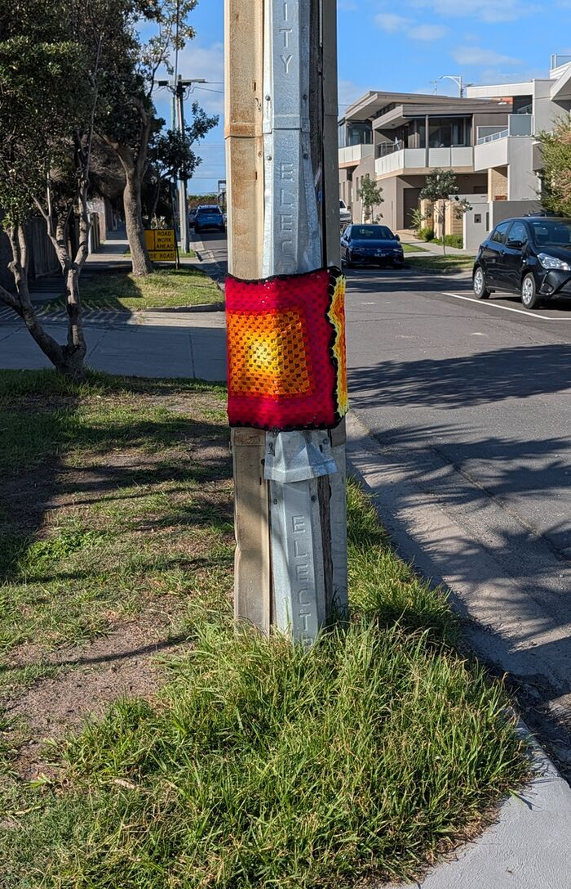

This is a small experiment in caring for a place out loud, one stitch and one street corner at a time.

About
Yarnitti is the umbrella: street art where yarn meets graffiti.
It marries knitting and graffiti into a soft kind of resistance, made out of love for land and people. Hand-crocheted wool wraps the everyday furniture of the street, and each piece carries a QR code to the story behind it.
Yarn craft is a moving meditation that gathers memories, dreams, and old stories. A finished piece is a map of belonging, woven with tenderness for land and people.
Yarnitti grows out of love for Edithvale. A small way of making a place feel held.
There is no intention to offend. If a piece is unwelcome, please send a note and it will be taken down.
Apricity
Apricity (noun): the warmth of the sun in winter.
Apricity is the winter 2026 collection, a season of work wrapped in the colours of cold-weather light: yellow, orange, red and purple, the tones of a low sun catching the bay.
It is a love letter to community and to old things. To the people who gather at the water's edge, to the courage of swimming in the cold, and to the small awe of finding warmth in the middle of winter. The cold is real. So is the warmth we make together.
More about the pieces, and where to find them, is on its way.
Lost the thread
This page wandered off somewhere.
It may have been taken down, or the link picked up a knot.
Gallery
The pieces, out in the world.
Treasure
Small wrapped pieces, hiding in plain sight.
All around Edithvale and the suburbs nearby, small wrapped pieces are hiding in plain sight, on poles, fences, benches and the odd surprising corner. They will only be up for a while before they come back down.
Go and find them. Log each one by its address, a photo, or both. Whoever has found the most pieces by the time they are taken down wins a custom amigurumi, crocheted by me just for them. A few runner-up prizes will go to the next keenest finders.
Full rules, the map, and how to submit your finds are on their way.